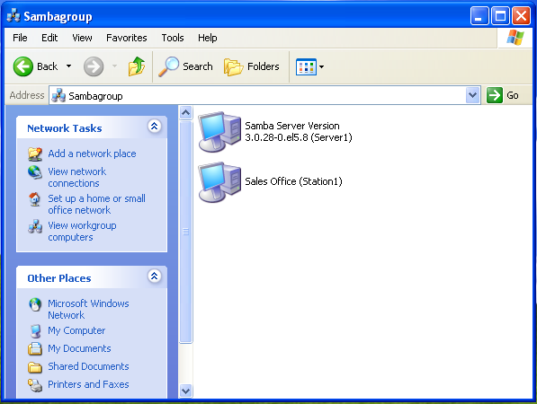
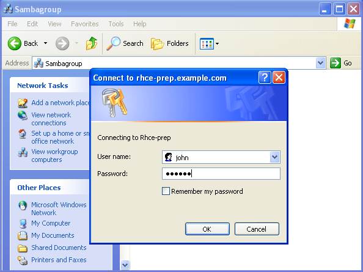
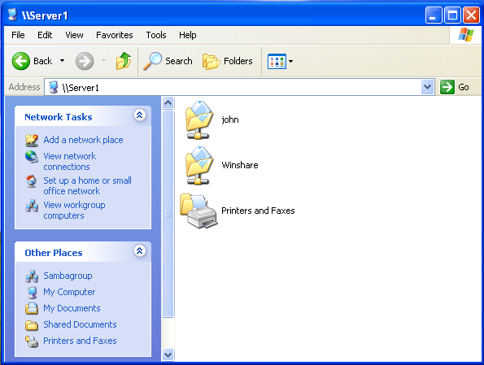
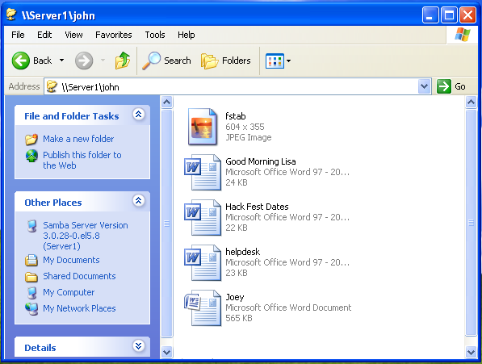

...making Linux just a little more fun!
Rick Moen [rick at linuxmafia.com]
Quoting Michael Makuch (linuxgazette at makuch dot org):
[You wrote to tag-owner@lists.linuxgazette.net. I've decided to CC this response to TAG.]
> Curious. I am subscribed to TAG with the address > linuxgazette at makuch dot org. > > However, I accidentally sent a message to TAG just now from > mike8 at makuch dot org, yet the message went through to the list. > > There seems to be a problem with the list if email from any ole > unregistered email address can send to it...
{sigh} No, it's a deliberate list configuration. You're absolutely right that that particular list configuration is archaic and essentially never seen (otherwise) on a usable mailing list in this decade, because of the continually rising spam problem. TAG has always been set up to permit non-subscriber posting because of its unique intended role: It's supposed to permit any reader of _Linux Gazette_ to address the mailing list to converse with The Answer Gang. Doing so of course makes it very vulnerable to spam.
You will probably have noticed that some spam does get through my MTA and mailing list software defences. I (as listadmin and MTA owner) then manually analyse ASAP any spam that does so, and take immediate action to ensure that no further mail from that (pick one; whatever seems most effective and least disruptive of legitimate mail) SMTP HELO string, or sending address, or sending domain, or IP will be accepted in the future. That is of course a no-win strategy with unavoidable collateral damage, but it's the best I can contrive under the circumstances.
TAG is the only mailing list with that configuration I know that's not utterly overwhelmed with spam and thereby made useless, so I must be doing something right. But the possibility of it, too, getting overwhelmed is always present.
[ Thread continues here (2 messages/2.91kB) ]
Jimmy O'Regan [joregan at gmail.com]
Tessboxes is a viewer/editor for tesseract boxfiles (used when creating training data for tesseract). http://www.lbreyer.com/tessboxes.html
On the topic of tesseract; there's also http://code.google.com/p/tesseractindic/ which is a version of tesseract adapted to Indian languages.
cuneiform-linux 0.5 was released recently, too; I'll see if I can find the announcement. It now supports hocr.
EJB [ejb at intergate.com]
Folks;
Several years ago, on a whim while at an OfficMax store I came across a sale going on regarding Mandrake v7.0 Linux and dis-satisfaction with MS (and the lower sales price) gave me reason enough to purchase the Linux package ... from the view of an owner/operator of several units - best thing I think I ever did. Couldn't believe that Linux software went on as smoothly as it did - and it worked - well mostly it worked but it did it well enough for me to keep an eye on the Linux OS which were available.
Recently I pulled an old Dell Latitude CPi D330XT out of "storage", deciding to keep it as a back up and fully operational unit and once again I've come across an old problem, one I never did solve in the past.
What I have is the following:
. A Dell D300XT laptop with a 10GB HD and 256kRam
. Mandrake v9.1 Linux and MS 98SE for Operating Systems
With disk partitioning, I've set or better, limited the HD space to just 2GB, with Mandrake v9.1 getting the rest of the available HD space. Yes, it does work/fit and very nicely at that but ...
PROBLEM I: SOUND - how do you get Linux to recognize the built-in sound card/chip which is available with these old Dell machines? At present,there is no sound at all and there is little doubt here but that and for want of a better term, "it's there" and it's just a case of finding out how to activate it.
PROBLEM II: PPP - It's timing out. I can get the dialer to dial in to the ISP but there's no data flow going on and the PPP times out. How do I get this software to "click" and connect?
PROBLEM III: SCANNER - I have an old (but very reliable V300 Microtech scanner but I can't get the Linux software system to recognize that the scanner is there. Win98SE will recognize it and operate it and there's no doubt here but that Linux will do it to - if I find and "set all the switches" in the proper manner.
I'm open to any and all ideas and suggestions.
Thanks for your time an interset.
ejb
[ Thread continues here (3 messages/13.27kB) ]
Chris Bannister [mockingbird at earthlight.co.nz]
Hi,
FYI
http://www.itworld.com/security/57285/once-thought-safe-wpa-wi-fi-encryption-cracked
--
Chris.
======
I contend that we are both atheists. I just believe in one fewer god
than you do. When you understand why you dismiss all the other
possible gods, you will understand why I dismiss yours.
-- Stephen F Roberts
[ Thread continues here (2 messages/1.66kB) ]
Suramya Tomar [security at suramya.com]
Hi Everyone,
I am working on a collage creation script in bash and am using find to get a list of all jpg files in a given directory. However find always returns the image names in the same order so the collage tends to have images from the same photo set i.e. at a given time it will have the most of the images from a particular subfolder.
What I want to do is get a list of random image file names from the system and then use it to create the collage, so that the collage looks more varied.
Here's what I have done so far to get a random file name:
awk "NR==$(($RANDOM % $(wc -l fi.txt| awk '{print $1}')))" fi.txt
where fi.txt was created using
find . -iname "*.jpg" -true | sed 's/ /\\ /g' >fi.txt
Now, this way works but I have to create a temp file which I want to avoid. Is there some way of getting find to return results in a random order? I tried searching the web but didn't find any useful results.
I am attaching the current version of the Collage creation script with this email to give you an idea of how it works. This version is without randomization of the filenames.
Thanks in advance for the help.
- Suramya
PS: Please do give your feedback/suggestions on how the script can be
improved in addition to a solution 
[ ... ]
[ Thread continues here (28 messages/36.11kB) ]
J.Bakshi [j.bakshi at icmail.net]
Hi list,
Hope you all are well.
I am trying to modify the /etc/inittab file to add more key combination. One of the reasons is to shut down the system. I have added this line in the inittab
~~~~~~~~~~~~~~~~~~~~~~~~~~~` #shut down wit ctrl+alt+end ce:12345:ctrlaltend:/sbin/halt ~~~~~~~~~~~~~~~~~~~~~~
but "init q" reports
:ctrlaltend: unknown action field
Could any one kindly point out my mistake ? I like to define some more key combination like ctrl+alt+< ; ctrl+alt+s etc to call commands. How can I define these key combination ?
Thanks
[ Thread continues here (5 messages/4.31kB) ]
J.Bakshi [j.bakshi at icmail.net]
Hello,
Hope you all are well.
I have designed a script which compress some files and store those files in a folder named by date like 10-11-2008 ( for 10th Nov 2008 ) and uploads it in a remote ftp server through lftp. the script runs every day. As the FTP space is little after every 15 or so days the FTP space qouata is full. I like to include a section in the script which will check the folders in the ftp server through lftp and deletes the folders which already 10 days matured.
Can any one suggest me how to do this throug lftp ?
thanks a lot
[ Thread continues here (10 messages/13.97kB) ]
Rick Moen [rick at linuxmafia.com]
Of possible interest to LG in that it's another notable episode in the perennial "What's a good free licence for non-software content?" debate.
----- Forwarded message from Rick Moen <rick@linuxmafia.com> -----
Date: Wed, 5 Nov 2008 22:28:28 -0800 From: Rick Moen <rick@linuxmafia.com> To: discuss@en.tldp.org Subject: LWN article: Wikipedia transition from GFDL to CC BY-SAThose of you who are Linux Weekly News subscribers, please see: http://lwn.net/Articles/305892/
GFDL 1.3: Wikipedia's exit permit by Jonathan Corbet November 5, 2008
[...] Members of the Wikipedia project have wanted to move away from the GFDL for some time. [...] The presence of the "or any later version" language allows Wikipedia content to be distributed under the terms of later versions of the GFDL with no need to seek permission from individual contributors. Surprisingly, the Wikimedia Foundation has managed to get the Free Software Foundation to cooperate in the use of the "or any later version" permission to carry out an interesting legal hack. [...]
In other words, GFDL-licensed sites like Wikipedia have a special, nine-month window in which they can relicense their content to the Creative Commons attribution-sharealike license. This works because (1) moving to version 1.3 of the license is allowed under the "or any later version" terms, and (2) relicensing to CC-BY-SA is allowed by GFDL 1.3.
LWN articles become available to the general public after eight days, so non-subscribers will be able to read the story starting Nov. 13.
----- End forwarded message -----
[ Thread continues here (4 messages/9.76kB) ]
Jimmy O'Regan [joregan at gmail.com]
"The first version (0.5.1) of apertium-en-gl, the Apertium-based English-Galician translator, has just been released. It has been developed by the Galician company imaxin|software, one of the companies in the OpenTrad consortium, with collaboration from the universities of Vigo and Santiago de Compostela, using preexisting data developed by groups from many different institutions. Apertium-en-gl has been developed with the support of the Consellaría de Innovación e Industria of the Galician Government (Xunta) and the Ministry of Industry, Tourism and Commerce of the Spanish Government"
http://sourceforge.net/forum/forum.php?forum_id=889264
The Apertium project has released linguistic data for translating from Basque to Spanish on this free/open-source machine translation platform. The translator is tuned to help Spanish speakers read Basque newspaper articles but does not aim at generating post-editable output. There are a number of identified problems which may be easily addressed to make it more usable. Developers welcome! Try it online at http://www.erdaratu.eu
https://sourceforge.net/forum/forum.php?forum_id=886821
Ben Okopnik [ben at linuxgazette.net]
[Forwarded from the RISKS digest]
John Oram, Microsoft has a problem, *IT Examiner*, 31 Oct 2008
Much of the patent portfolio of some of the world's biggest software companies has become worthless overnight, thanks to a ruling yesterday by the US patent court.
The US Court of Appeals for the Federal Circuit (CAFC) in Washington DC has decided that in the future, instead of automatically granting a patent for a business practice, there will be a specific testing procedure to determine how patentable is that process.
The decision is a nearly complete reversal of the court's controversial State Street Bank judgment of 1998, which started the stampede for patenting business practices.
http://www.itexaminer.com/us-court-throws-out-most-software-patents.aspx http://www.groklaw.net/pdf/07-1130.pdf
-- * Ben Okopnik * Editor-in-Chief, Linux Gazette * http://LinuxGazette.NET *
Jimmy O'Regan [joregan at gmail.com]
[Totally off-topic, but we all like to read, right?]
The OpenLibrary is a project from the Internet Archive; in short, they're building a Google Books-type catalogue of titles, integrated with the ability to search the text of those titles that have been made available through the Internet Archive. The coolest thing they have, though, is a 'scan on demand' feature for any book available at Boston Public Library -- if the book hasn't already been scanned, a librarian will put it in the scanner for you: http://openlibrary.org/bpl
[ In reference to "Build a Six-headed, Six-user Linux System" in LG#124 ]
Ben Okopnik [ben at linuxgazette.net]
----- Forwarded message from "D. Osborn" <dgosborn@hotmail.com> -----
Security can be addressed by using something like puppy linux. Once you get your config worked out you can burn the CD and boot from it. Any compromises can be fixed with a nightly reboot. giving the users qemu or vmware sessions can isolate them and I think you can lock them into those sessions for troubleshooting the other problems try first creating just one change or another, extending the number of possible devices (a-f), or adding extra keyboard, or mouse, etc. one at a time to see when the problem shows up. Any news on this? I'm thinking of using it in my call center if I can work out the bugs. regards dale
----- End forwarded message -----
-- * Ben Okopnik * Editor-in-Chief, Linux Gazette * http://LinuxGazette.NET *
[ Thread continues here (2 messages/2.18kB) ]
[ In reference to "A (not so) short overview of the Geographic Information System GRASS" in LG#156 ]
Thomas Adam [thomas.adam22 at gmail.com]
I was pleased to see in November's LG an article on GRASS. I've been playing with this for years, and recently bought the third edition of the book:
"OPEN SOURCE GIS: A GRASS GIS Approach"
Which is briliant, in my opinion. I don't use GRASS for anything fancy, but it helps me plot local geological data I collect in my spare time.
Nice article. Good to see it in LG.
-- Thomas Adam
"It was the cruelest game I've ever played and it's played inside my head." -- "Hush The Warmth", Gorky's Zygotic Mynci.
[ In reference to "Talkback" in LG#156 ]
Jimmy O'Regan [joregan at gmail.com]
Talkback: [LG 86] 2c Tips #20
> This is clearly the wrong Talkback link, but after some serious > searching of the LG archives, I can't find the source anywhere.
It's here: http://linuxgazette.net/149/misc/lg/alien_tongues.html with this note "This originally had a subject line that allegedly referred to an old LG (issue 86!) tips."
Sorry for the confusion!
oscar laycock [oscar.laycock08 at googlemail.com]
I thought you might be interested to know that the latest KDE 4.1 runs surprisingly well on my 10 year old PC. It is only a 350mhz Pentium 2 with 128mb of swap. I built KDE myself - you just run "cmake" instead of configure. I have also done some Qt programming, though sometime I have to increase the swap by 200 or 300 meg.
I simplified Linux from Scratch (LFS). I run a 1998 version of Red Hat Linux(!) alongside my new stuff in /usr/local. I hardcode in a rpath to the new libraries when compiling new programs.
I would encourage everyone to try LFS (www.linuxfromscratch.org). I only knew a little Unix and some C when I started. It is fun, you learn a lot, and get a great sense of achievement.
Ben Okopnik [ben at linuxgazette.net]
If you use Firefox, you're probably addicted to its oh-so-nifty little search bar (how did we ever live without those?) What you may not know, though, is that you can add your own entries to that pull-down list - all you need is a properly-formatted search URL, a bit of XML and maybe a Base64-encoded icon. So, for those of you who want to search LG in the easiest way possible, here it is; save it as '~/.mozilla/firefox/<profile>/searchplugins/lg.xml', restart Firefox, and enjoy!
[ ... ]
[ Thread continues here (1 message/3.60kB) ]
Mulyadi Santosa [mulyadi.santosa at gmail.com]
A quick way to show current month's calendar is by executing "cal" command. By default, it will show current month calendar.
Should you need to show calendar of certain month and year, simply type it as parameter. For example:
$ cal 1 1979will show you calendar of January 1979
regards,
Mulyadi.
[ Thread continues here (9 messages/9.48kB) ]
Mulyadi Santosa [mulyadi.santosa at gmail.com]
This kind of problem doesn't manifest in explicit message. What you see is just graphs that disappear. But it will become clear when you run the poller directly like this:
$ sudo -u cacti /usr/bin/php /var/www/cacti/poller.phpAllowed memory size of 8388608 bytes exhausted (tried to allocate 12 bytes)
At first, one might think it's something related to ulimit and rush to change stack size limit for example. But that's not the problem. The problem lies in php CLI (Command Line Interface) which tries to allocate memory in stack in order to prepare data to be shown in graph tree and so on.
In Ubuntu, try to edit this line in /etc/php5/cli/php.ini:
memory_limit = 8M
8 Megabyte might be too low especially you poll hundreds of devices, so try to rise the number. From some reference, it is declared that 128 M is the maximum size of memory PHP CLI can allocate in stack.
regards,
Mulyadi.
Ben Okopnik [ben at linuxgazette.net]
[For some reason, I thought I'd submitted this ages ago; searching LG shows that I was apparently wrong.]
There are lots of times - e.g., when you're editing a critical file, or want to keep multiple versions of a script that you're developing - that you want to take a snapshot of your current directory, or at least of some of the files within it. I've been using the following script for the past several years, and it's proven to be flexible, powerful, and fully sufficient for the task.
Note that you can also define a ".backup" file within the directory (this should contain the names of the files to be backed up, one per line) so you can run "backup" without any arguments and still have it snapshoot the right files. Enjoy!
#!/bin/sh
# Created by Ben Okopnik on Wed Jan 26 21:48:05 EST 2005
name="`/usr/bin/printf $0|/bin/sed 's|.*/||'`"
usage () {
cat <<!
Usage:
$name -h
$name [-a] [file[s]]
-h Show this help
-a Back up all specified files unconditionally
The list of files to be backed up can be defined either in a
.backup file in the current directory, on the command line, or as a
combination of the two. The files will be saved in a "backup"
subdirectory, with a timestamp extension appended to their
filenames.
If the latest archived copy of a specified file does not differ
from the current version, the file will not be backed up unless the
"-a" option is used.
!
}
case "$1" in
-h) usage; exit ;;
-a) do_all=1; shift ;;
-n) no_file=1; shift ;;
esac
backup () {
# Create a backup directory if necessary
[ -d "backup" ] || {
[ -e "backup" ] && {
echo "Error: $PWD contains a file called 'backup': can't create a 'backup' directory!"
exit
}
echo -n "Creating 'backup' directory... "
mkdir backup
[ "$?" -eq 0 ] && echo "Success!" || { echo "Failed - exiting."; exit; }
}
for file in "$@"
do
[ -f "$file" ] || { printf "$file not found!\n"; continue; }
# Find the last backup for each file
latest="`ls backup/$file.20[0-9]* 2>/dev/null|tail -1`"
[ -z "$latest" ] && do_all=1
if [ "$do_all" = "1" ] || [ -n "`diff -q $file $latest`" ]
then
cp -i "$file" "backup/$file.`date +'%Y%m%d%H%M%S'`"
saved="$saved $file"
else
nodiff="$nodiff $file"
fi
done
[ -n "$saved" ] && echo "Backed up: $saved"
[ -n "$nodiff" ] && echo "NOT backed up (identical files in archive): $nodiff"
}
[ "$no_file" = 1 ] || { [ -f ".backup" ] && set "$@ `cat .backup`"; }
if [ -n "`echo $*|grep '[^ ]'`" ]
then
backup $@
else
echo "No files specified and no ./.backup file found; exiting."
exit 1
fi
-- * Ben Okopnik * Editor-in-Chief, Linux Gazette * http://LinuxGazette.NET *
[ Thread continues here (5 messages/8.30kB) ]
By Deividson Luiz Okopnik and Howard Dyckoff

|
Contents: |
Please submit your News Bytes items in plain text; other formats may be rejected without reading. [You have been warned!] A one- or two-paragraph summary plus a URL has a much higher chance of being published than an entire press release. Submit items to bytes@linuxgazette.net.
 Red Hat Delivers
Linux HPC Platform
Red Hat Delivers
Linux HPC PlatformIn October, Red Hat announced its integrated Linux-based High Performance Computing (HPC) platform with the Red Hat HPC Solution, an all-in-one stack to deploy, run, and manage their HPC clusters. First announced in collaboration with Platform Computing in November 2007, the HPC Solution is available through Red Hat Network with 24x7 customer support services.
Historically, building and managing HPC clusters is a cost and expertise challenge for IT departments. Red Hat HPC Solution includes all of the components to build and manage a complete HPC cluster in an end-to-end solution that can be deployed in under one hour.
The Red Hat HPC Solution incorporates all of the components necessary to deploy and maintain HPC clusters, including Red Hat Enterprise Linux 5.2 and Platform Computing's cluster software framework, Platform Open Cluster Stack 5. The solution also includes device drivers, a simple cluster installer, cluster management tools, a resource and application monitor, interconnect support and Platform Lava, a powerful job scheduler.
"With our HPC Solution, we're enabling our customers to focus on their business goals and competitive advantage without needing to worry about the challenges of deploying and managing their HPC cluster - we're taking care of this for them," said Scott Crenshaw, vice president, Platform Business Unit at Red Hat. "We're delivering the first Linux-based solution that allows our customers to deploy a fully integrated high-performance computing environment in minutes rather than in weeks or months."
For deploying and managing HPC clusters, Red Hat, Dell and Platform Computing have also partnered to offer customers a comprehensive cluster computing package, Platform Open Cluster Stack (OCS), to ease cluster deployment, management and operation of the Red Hat HPC.
The Red Hat HPC solution is available from Red Hat with prices starting at $249 per node. For more information about the Red Hat HPC solution, visit http://www.redhat.com/hpc/.
Sun Updates Java 6,
Supports Java Widgets on DesktopSun Microsystems announced availability of Java Standard Edition 6 Update 10 (Java SE 6u10), which improves the usability and performance Java on desktop computers everywhere. It can be download at: http://java.sun.com/javase/downloads/index.jsp.
This update is optimized with new features that include: a radically improved startup time for Java applications and applets, the ability to drag Java applets directly from the browser to the desktop and have them run as widgets, more powerful application graphics, and a new cross-platform look and feel. Java Quick Starter also significantly improves the start-up time for any Java application or applet.
Developers also benefit from the enhancements in Java SE 6u10. The built-in Deployment Toolkit ensures end users run the most recent version of Java SE. A new Java plug-in provides full browser independence, complete interoperability with Web 2.0 technologies and supports different versions of Java running at the same time on the same machine.
Java SE is present on over more than 800 million desktop computers - 91 percent of Internet-connected PCs worldwide, according to Sun.
The Java Kernel is a new method of getting Java software up and running faster. Instead of installing the full Java Runtime Environment (JRE(TM)), users download the Java Kernel, which includes the most commonly needed JRE components. Additional components are then downloaded by the JRE as they are needed.
Java SE 6u10 includes a brand-new implementation of the Java Plug-in that allows consumers to drag and drop applets that are running in their browser directly onto their desktop, which provides a widget-like experience for all of their Java applications and applets.
The graphics pipeline for Java on Windows has been rewritten to leverage Direct3D for everything from simple fills and copies, to translucency, gradients, arbitrary transformations and other more advanced 2D operations. This capability also improves the runtime performance of Swing applications.
IBM Breaks Performance Records with SSDiskEngineers and researchers at the IBM's Hursley development lab in England and the Almaden Research Center in California have demonstrated groundbreaking performance results that outperform the world's fastest disk storage solution by over 250 percent.
The results were achieved using Flash solid-state technology coupled with IBM's industry leading, highly scalable storage virtualization technology. Under the codename "Project Quicksilver", IBM achieved groundbreaking results in transferring data at a sustained rate of over one million Input/Output (I/O) per second - with a response time of under one millisecond (ms). Compared to the fastest industry benchmarked disk system, Quicksilver improved performance by 250 percent at less than 1/20th the response time, took up 1/5th the floor space and required only 55 percent of the power and cooling.
Quicksilver is part of IBM's focus on leveraging emerging systems technologies to deliver advanced data center capabilities. Performance improvements of this magnitude can have profound implications for business, allowing 2-3 times the work to complete in a given timeframe for classic workloads and creating opportunity for entirely new information warehouse and analytic solutions.
For more information about IBM and IBM System Storage, visit http://www.ibm.com/storage.
VIA Collaborates
with OpenChrome on Open Source Video DriverSupport from VIA's software development team will enrich the OpenChrome driver's feature support for VIA IGP chipsets.
Building on the recent release of the VIA graphics driver available on the VIA Linux Portal (http://linux.via.com.tw), VIA is actively collaborating with the OpenChrome development team on their Open Source graphics driver - initially assisting with multi-head support and RandR function.
"This cooperation between the community-based OpenChrome developers and VIA's staff developers will enable everyone to shift towards one code base, combining the features and strengths of both drivers," said Mr. Welte. "It also shows that VIA is not only releasing source code and documentation, but actively moving towards a much more open and collaborative driver R&D process."
More information about the OpenChrome driver can be found here: http://www.openchrome.org/.
IBM and SUN Kick Off ODF Tools InitiativeAt the OpenOffice Conference (OooCon 2008) in Beijing, Sun and IBM announced support for the Open Document Format (ODF) Toolkit Union and the new ODF Toolkit, an open source software project that will make productivity suites more versatile and useful.
Sun made the initial code contribution and IBM will followup in the Open Document Format Toolkit Union, a project to make it easier to use ODF.
The ODF Toolkit seeds the ground for a new generation of applications and expands the potential of existing productivity suites. Starting with an initial code contribution from Sun, the ODF Toolkit is an open source software project that provides developers with an easy-to-use API for reading, writing, and manipulating ODF documents.
The ODF Toolkit lets developers:
- Automatically create reports in response to database queries;
- Index or scan documents to support search services;
- Scan documents to support anti-virus services;
- Scan documents for regulatory compliance, legal, or forensic
purposes;
- Convert data from one editable format to another;
- Render data as audio or video in a unified communications
document;
- Import data from an Office document into a non-Office
application (for example, import spreadsheet data into a
statistical analysis application for business intelligence use);
- Render and import documents for display and editing on mobile
devices.
Read more at: http://cwflyris.computerworld.com/t/3838211/250473354/149203/0/.
AMD New Quad-Core "Shanghai" Opteron Processor Goes GAAMD has released an enhanced 45nm Opteron chip that offers better power efficiency and up to a 40 percent increase in virtualization performance. Among the new features in Shanghai family is a 6MB L3 cache with a shared 512KB L2 cache.
Going to a smaller die-size allows the new Opteron CPUs to offer up to 35 percent more performance with up to a 35 percent decrease in power consumption at idle. The new processors deliver faster "world switch" time, which enhances virtual machine efficiency, and feature improved Rapid Virtualization Indexing, AMD's innovation in AMD-V that reduces the overhead associated with software virtualization.
This will make the new chips competitive with the new "Nehelam" Intel Xeon processors, also released in November. AMD also plans to bring higher-performance and more energy efficient 45nm processors to the desktop PC market in Q1 2009 with the AMD platform codenamed "Dragon". This platform will be the second generation AMD quad-core desktop platform and is designed to leverage AMD 700 Series chipsets and ATI Radeon HD 4000 series graphics.
As a competitive comparison, AMD claimed that its Opteron Model 2380 processor only used 138W at Active Idle compared to the Quad-Core Intel processor using 179W at Active Idle. The Quad-Core AMD Opteron Model 2380 had a SPECpower_ssj2008 overall rating of 731 ssj_ops/Watt and 308,089 ssj_ops at 100% target load. The Quad-Core Intel processor had a SPECpower_ssj2008 result of 561 overall ssj_ops/Watt and 267,804 ssj_ops at 100% target load.
For more information on the enhanced Quad-Core AMD Opteron processor including FAQs, development tools, online press kits and other general information, please visit http://multicore.amd.com.
AMD and Red Hat on Virtual Machine "Live Migration"AMD and Red Hat demonstrated for the first time a "live migration" of a virtual machine across different chip platforms. Live migration enables the movement of running virtual machines (VMs) from one physical server to another without disrupting service, something that had only been demonstrated across systems based on one vendor's platforms. This live migration demo in November moved a live VM from an dual socket Intel Xeon DP Quad Core E5420-based system to a 45nm Quad-Core AMD Opteron processor, utilizing Red Hat's high-performance open source virtualization software. See the demonstration on the AMD Unprocessed YouTube Channel http://www.youtube.com/watch?v=EuhU6jJjpAQ or at AMD's site http://www.amd.com/amdlivemigration01.
Linux Foundation
Hosts First End User SummitThe first ever Linux Foundation End User Summit was attended by over 140 people, including end users of Linux, as well as kernel developers and commercial vendors, with the goal of providing new lines of communication between these groups. The event was held during October in New York City, and allowed Unix users at many major financial institutions to attend.
The two-day event demonstrated a desire on the part of the end user community to understand how Linux works on a deep technical level and how their companies can participate more in Linux or benefit more from its features. Keynotes for the event included a discussion from Anthony Williams, author of Wikinomics: How Mass Collaboration Changes Everything, and Jonathan Corbet, editor of Linux Weekly News and creator of the Linux Weather Forecast.
The first day was marked by several panel discussions, which allowed attendees to get some specific questions answered, such as how Linux fits in current enterprise operations and how corporate end users can participate more in the Linux development process.
The second day of the conference was divided into four tracks of sessions: Legal/Business, Futures, Operations, and Performance. Many attendees also used the opportunity to get into smaller groups and go over their specific needs. Several Linux kernel developers, including James Bottomley, Andrew Morton, and Theodore T'so, were in attendance at the Summit.
By design, the event was invitation-only so end users were encouraged to be free about their concerns. No members of the Press were allowed to attend. The Linux Foundation is planning another End User Summit in 2009.
Below, are links to slides from many of the sessions at the summit: https://www.linuxfoundation.org/events/enduser/slides
Ikoula Teams Up with R1Soft to Provide BackupsIkoula, a hosting and data center solutions provider in France just announced partnership with R1Soft to provide a backup solution for self-managed dedicated servers and managed hosting.
"After searching for a backup solution for over a year, we finally found R1Soft CDP. While backups are not a daily top business priority for most, people truly value them on the day they need them and thanks to R1Soft we are able to provide our customers with available, working and easily accessible backups when it counts," said Arnaud Tayac, Ikoula Marketing Director. "We are excited about offering this new technology as part of our services and feel that R1Soft will provide a better sense of security and help facilitate long, lasting relationships with our customers."
More information about the partnership can be found on http://www.r1soft.com/company/press-releases/[...].
Linux Foundation
Helps Linux Distros Obtain IPv6 CertificationThe Linux Foundation's IPv6 (Internet Protocol Version 6) Workgroup is enabling the major Linux "distros" to meet the U.S. Federal Government's Department of Defense (DOD) mandate and certification requirements for the new Internet protocol. IPv6 is the next-generation Internet protocol designed to replace IPv4, in use for nearly 20 years. Due to the explosive growth of the Internet, it is expected that IPv4 addresses will be exhausted within just a few short years.
To accelerate IPv6 migration, the U.S. Federal Government issued a mandate for all of its agencies to meet the next-generation Internet protocol requirements for any computing and networking equipment they acquire.
The Linux Foundation, with leadership from Venkata Jagana, Senior Technical Staff Member and Chief Architect of Networking within IBM's Linux Technology Center, formed a Linux IPv6 Workgroup to collaboratively address this major undertaking and enable Linux-based machines to be IPv6-ready out of the box. Other active workgroup participants included HP, Nokia-Siemens, Novell and Red Hat.
The Linux Foundation IPv6 Workgroup reviewed the mandate requirements and performed a detailed IPv6 gap analysis to identify where Linux needed to be adapted. As a result, existing Linux features, such as ICMPv6, DHCPv6, MIB support and IPSec for IPv6, are now updated to conform to the Department of Defense requirements.
"The IPv6 mandate and ensuing requirements are such major undertakings that it makes it difficult for any one company to deal with it all on its own," said Jim Zemlin, executive director at The Linux Foundation. "This is exactly the kind of work and collaboration that the Linux Foundation can facilitate, and which results in real technology advancements for the Linux operating system."
For more on the Linux Foundation's IPv6 Workgroup and its analysis, visit the IPv6 Workgroup website. http://www.linuxfoundation.org/en/IPv6.
Sun Introduces ZFS-based Storage AppliancesSun took the wraps off of its innovative Unified Storage Systems - the Sun Storage 7000 family, code-named "Amber Road." Based on industry standard components and Sun's software stack, this new storage family offers high-end diagnostics and troubleshooting capabilities, optimized performance, one-fourth the energy consumption, installation and configuration in under five minutes and up to 75% cost savings - compared to competing storage systems. To learn more, go to http://www.sun.com/unifiedstorage.
The Sun Storage 7000 family features three products in its initial release: Sun Storage 7110, 7210 and 7410 - each part of a new and broad family of Unified Storage Systems. These storage systems fully exploit Flash Hybrid Storage Pools within Solaris ZFS to optimize performance while lowering power and cooling requirements.
Breaking the industry trend that charges per individual storage features, all Sun Storage 7000 Unified Storage Systems include comprehensive data services at no extra cost, such as snap/clone, restore, mirroring, RAID-5, RAID-6, replication, active-active clustering, compression, thin provisioning, CIFS, NFS, iSCSI, HTTP/FTP and WebDAV.
The Sun Storage 7000 Unified Storage System begins at $10,000 for the Sun Storage 7110. The Sun Storage 7210 starts at $34,995 and the Sun Storage 7410 starts at $57,490 for a single node version (12 TB) and $89,490 for a clustered 12TB configuration.
Sun hosted a live Webcast of the Amber Road launch from the CEC show in Las Vegas in November. See: www.sun.com/launch for more details.
Join us at the Paradise Point Resort for this symposium covering the most innovative systems research, including over 20 high-quality papers in areas including OS architecture, cloud computing, and monitoring, as well as a poster session. Don't miss the opportunity to gather with researchers from across the systems community in what has become a premier forum for discussing the design, implementation, and implications of systems software.
 TinyMe 2008.1 Beta 1
TinyMe 2008.1 Beta 1The first beta for TinyMe 2008.1 is trying to improve on version 2008.0 by making TinyMe even smaller. TinyMe 2008.1 is an effort to get down a 150 MB ISO.
Future users of smaller ISO the will be able to:
- Boot up the LiveCD;
- log in to a graphical desktop environment;
- configure a system with the PCLinuxOS Control Center;
- install TinyMe to the hard drive;
- install programs with Synaptic.
More information on this distro can be found on the project page, here: http://www.tinymelinux.com/
FreeBSD 6.4 RC OutThe first release candidate of FreeBSD 6.4 is now available. This is the first of two expected release candidates.
ISO images for Tier-1 architectures are now available on most of the
FreeBSD mirror sites.
The primary download site is: ftp://ftp.freebsd.org/pub/FreeBSD/releases/${arch}/ISO-IMAGES/6.4/
Fifth Beta Build of SimplyMEPIS 8.0The fifth beta build of SimplyMEPIS 8.0, a desktop distribution based on Debian "Lenny", was released in November.
The core of MEPIS is being kept in sync with the upcoming Debian stable release, Lenny. Recently, NSPluginWrapper 1.0.0, VirtualBox-OSE 2.0.4, OpenOffice.org 3.0.0, and Firefox 3.0.3 were updated in SimplyMEPIS and in the MEPIS 8.0 pool.
SimplyMEPIS 8.0 beta 5 updates several packages. ISO files of the fifth beta of SimplyMEPIS 8.0 are available for 32-bit and 64-bit processors. In this release the kernel has been updated to upstream version 2.6.27.5 and the extra drivers have been rebuilt for the new kernel. GRUB has been updated to 0.97. It is hoped that this will resolve the problems a few users have reported with not being able to access a bootable CD.
SimplyMEPIS is available at: http://www.mepis.org/mirrors
StarOffice 9 Now ShippingA major update to Sun's office productivity suite, StarOffice 9 and the corresponding Asian-language StarSuite 9, is now available. Sun's office productivity suite is open source, natively supports Mac OS X, and delivers new versions of its word processor, spreadsheet, presentation, database, and drawing software. StarOffice 9 is easy to use with StarOffice and OpenOffice ODF files, Microsoft Office files, and PDF documents.
StarOffice 9 is completely open-sourced, with the same binaries as OpenOffice.org 3.0. In this release, StarOffice has a fresh new look, with a new start center, new icons and a host of usability improvements. Many new features - multiple page editing in Writer, an optimization Solver tool and 1024 columns in Calc, native table support in Impress, and effective handling of poster-size graphics in Draw - increase productivity and make StarOffice 9 very easy to use.
For more info, visit: http://www.sun.com/software/staroffice/index.jsp
Super Talent Launches SSDs for Asus Eee PCsSuper Talent Technology, a manufacturer of Flash storage solutions and DRAM memory modules, has a new line of mini PCI-Express SSDs, available in 16GB, 32GB and 64GB capacities, that were designed explicitly for the Asus Eee PC.
Standard Eee PCs have maximum 20GB of storage. These cost-effective upgrade cards offer up to 64GB of solid state storage. Super Talent's Mini PCIe cards have been tested extensively with Asus Eee PCs to ensure performance and compatibility.
TrueCrypt Provides FOSSw Security to USB DrivesTrueCrypt secures external disk drives, especially USB thumb drives. Now in its 6th release version, TrueCrypt shows how Open Source Software adds value to every day activities. The software installs on a computer and offers choices about how to encrypt the external drive. The basic choices involve selecting an encryption algorithim and then either creating an encrypted container on the USB flash drive (this is safest and easiest) or encrypting the entire drive (but losing the password effectively trashes the drive).
Here are the main features for version 6a:
- Creates a virtual encrypted disk within a file and mounts it as
a real disk;
- Encrypts an entire partition or storage device such as USB flash
drive or hard drive;
- Encrypts a partition or drive where Windows is installed
(pre-boot authentication);
- Encryption is automatic, real-time (on-the-fly) and transparent;
- Provides two levels of plausible deniability, in case an
adversary forces you to reveal the password:
1) Hidden volume (steganography) and hidden operating system;
2) No TrueCrypt volume can be identified (volumes cannot be
distinguished from random data);
- Encryption algorithms: AES-256, Serpent, and Twofish;
- Multi-core and multi-processor parallelized encryption and decryption.
And much more. For more information, please see: http://www.truecrypt.org/docs/?s=version-history
Wine 1.1.8 Development ReleaseThis new Wine development was released in November. Here's a summary
of what's new :
- substantial parts of inetcomm implemented (for Outlook);
- better crypt32 support;
- memory management improvements;
- theme support for buttons;
- many bug fixes.
The source is available now. Binary packages are also being built.
The October Wine 1.1.7 release included some support for Direct3D 10 and installer fixes, particularly for IE 7.
Ingres Launches Ingres 9.2 Open Source DatabaseIngres Corporation, a provider of open source database software and support services, announced the availability of Ingres Database 9.2.
Ingres Database 9.2 is secure, reliable, and scalable for use with business intelligence, content management, data warehousing, enterprise resource planning (ERP), and logistics management. Ingres Database also offers added features to further improve the 24x7 availability required by the enterprise.
To download the latest version, go to: http://esd.ingres.com/product/Ingres_Database/9.2
Free beta of Hot Copy for LinuxR1Soft announced the release of a free beta version of its Hot Copy for Linux, a new command line utility that takes readable and writable snapshots of disks or volumes on any Linux server, without interrupting applications on busy Linux servers. As block level changes are made to the device, Hot Copy makes a backup copy of only the changed blocks instead of replicating the entire drive. These changed blocks are then efficiently stored in the unused space on the hard disk.
"Hot Copy is big news for anyone that has to maintain a Linux server. With Windows you have Volume Shadow Copy Service (VSS). There is nothing really like VSS for Linux servers. It's a big missing piece for Linux Enterprise IT. You have LVM snapshots of course, and the challenge with LVM is that most servers don't run LVM, and even if they do the LVM volumes have to be configured ahead of time with spare disk space. Linux server admins need a simple command that allows snapshots on any Linux server at any time. This is what Hot Copy does. After installing the Hot Copy RPM or .deb package it's one simple hcp command and they have an instant point-in-time snapshot on any Linux disk," said David Wartell, Vice President of R1Soft, a division of BBS Technologies, Inc.
The free Linux Hot Copy beta version is scheduled for release in late November. Pre-registration (http://www.r1soft.com/products/linux-hot-copy/linux-hot-copy) is available for those interested in downloading Hot Copy prior to the general release date.
JBoss News and InformationPortal's new features include JSR 286 support for standards-based eventing between portlets and a Portlet Bridge supporting JSF, RichFaces and Seam-based portlets. Portal 2.7 provides the technology for the upcoming JBoss Enterprise Portal Platform 4.3. The JBoss Enterprise Portal Platform is an integrated open source platform for hosting and serving a portal's web interface, aggregating, publishing, and managing its content, and personalizing its experience.
Red Hat announced updates of its enterprise offerings for SOA deployment with the release of JBoss Enterprise SOA Platform 4.3 and JBoss Operations Network 2.1. The newest versions of JBoss Enterprise SOA Platform and JBoss Operations Network allow for the remote monitoring and management of open source SOA deployments and include new enterprise service bus (ESB) and rules features.
New features in JBoss Enterprise SOA Platform include:
- New ESB Features - New gateway listeners, a declarative security
model, improved web services integration and additional scripting
languages that can accelerate enterprise adoption of open source SOA by
enabling simpler web services integration and deployment;
- New Rules Features - Stateful Rules services, decision tables
and Rule agent support which enable business event processing with an
event-driven architecture (EDA), as well as allow non-developers
to construct business rules and enable rapid deployment.
Enterprise SOA Platform, helping to reduce the cost of enterprise SOA
deployments. New capabilities in the JBoss Operations Network 2.1
include:
- Scalable and centralized management for JBoss Enterprise SOA Platform;
- Remote platform configuration and deployment;
- Automatic ESB service inventory discovery;
- Monitoring metrics;
- Patch management;
- JBoss ESB service monitoring.
"As SOA deployments expand, so does the need for more robust, automated monitoring and management techniques," states Sandra Rogers, Program Director for SOA, Web Services, and Integration research at IDC. "Tracking and ensuring service performance and policy enforcement at multiple levels, and across varied SOA infrastructure elements, is crucial for supporting more dynamic and complex configurations."
JBoss Enterprise SOA Platform is built from open source projects such as JBoss ESB, JBoss jBPM, and JBoss Rules. JBoss Operations Network provides enterprises with a customizable management tool set.
JBoss Enterprise SOA Platform 4.3 and JBoss Operations Network 2.1 are expected to be available by the end of October 2008.
To learn more about how open source SOA can help your business and to take a free online SOA Assessment, please visit the JBoss SOA Resource Center at www.jboss.com/resources/soa.
For more information about JBoss, please visit http://www.jboss.com.
Talkback: Discuss this article with The Answer Gang
![[BIO]](../gx/authors/dokopnik.jpg)
Deividson was born in União da Vitória, PR, Brazil, on 14/04/1984. He became interested in computing when he was still a kid, and started to code when he was 12 years old. He is a graduate in Information Systems and is finishing his specialization in Networks and Web Development. He codes in several languages, including C/C++/C#, PHP, Visual Basic, Object Pascal and others.
Deividson works in Porto União's Town Hall as a Computer Technician, and specializes in Web and Desktop system development, and Database/Network Maintenance.
Howard Dyckoff is a long term IT professional with primary experience at
Fortune 100 and 200 firms. Before his IT career, he worked for Aviation
Week and Space Technology magazine and before that used to edit SkyCom, a
newsletter for astronomers and rocketeers. He hails from the Republic of
Brooklyn [and Polytechnic Institute] and now, after several trips to
Himalayan mountain tops, resides in the SF Bay Area with a large book
collection and several pet rocks.
Howard maintains the Technology-Events blog at
blogspot.com from which he contributes the Events listing for Linux
Gazette. Visit the blog to preview some of the next month's NewsBytes
Events.

The Linux kernel has for a long time (at least since v2.1.23) contained a clever and well-optimised mechanism for calling initialisation code in drivers. It's clever because its functionality is largely abstracted from the driver developer, and it's well-optimised because after initialisation, memory containing the initialisation code is released. This article explores how this mechanism works.
We'll start by seeing how driver developers make use of this functionality; the following code comes from linux-2.6.27.6/drivers/net/smc911x.c and is the driver for a common Ethernet chipset (smc911x).
2206: static int __init smc911xinit(void)
2207: {
2208: return platform_driver_register(&smc911x_driver);
2209: }
...
2216: module_init(smc911x_init);
The smc911xinit function can be considered as the entry point into the driver; of particular interest is the __init macro and the static declaration. The __init macro is used to describe the function as only being required during initialisation time: once initialisation is performed, the kernel will remove this function and release its memory. The module_init macro is used to tell the kernel where the initialisation entry point to the module lives, i.e. what function to call at 'start of day'. In a typical driver, you will often see many functions marked with the __init macro - these are used for initialisation - and a single module_init declaration.
Even though we are expecting the kernel to call smc911x_init at 'start of day', we have marked it as static - but that's OK (later, we will see how the function is called). This is a particular strength of the init call mechanism: it reduces the amount of public symbols and reduces the coupling between driver modules and other parts of the kernel.
The optimisation provided by the init call mechanism also provides a means for recovering memory used by the initialisation data. Such data can be 'tagged' with the __initdata macro.
With the above code in place, at an appropriate time during start-up, the kernel will call the smc911xinit function, and once it has been executed its memory will be released. You can see this in the output from kernel (e.g. dmesg); for example, an x86 machine may print the following:
Freeing unused kernel memory: 386k freed
This line is telling us that 386k of memory that previously contained initialisation code and data has now been freed.
OK - So we've seen how the mechanism is used. Now, let's take a closer look and see how it works under the hood. A quick 'grep' reveals that the __init macro is defined in include/linux/init.h:
43: #define __init __section(.init.text) __cold
The __section and __cold macros are defined in the various include/linux/compiler*.h files:
compiler.h: 182: #define __section(S) __attribue__ ((__section__(#S))) compiler-gcc4.h: #define __cold __attribue__ ((cold))
And when we expand it out we get:
#define __init __attribute__((__section__(".init.text"))) __attribute__ ((cold))
Thus, when the __init macro is used, a number of GCC attributes are added to the function declaration - in the case of a different compiler, the compiler.h file will ensure the macros expand out to whatever is necessary for the relevant compiler. The cold attribute is a relatively new GCC attribute and has existed since GCC4.3 - its purpose is to mark the function as one that is rarely used, which results in the compiler optimising the function for size instead of speed. What we are really interested here is the 'section' attribute. The __init macro uses this attribute to inform the compiler to put the text for this function in a special section named ".init.text". The purpose here is to put all initialisation functions in a single ELF section such that the entire section can be removed after initialisation has been performed.
So what does module_init do? Its exact functionality depends on whether the module in question is built-in or compiled as a loadable module. For the purposes of this article, we'll be looking at the built-in modules. Back to include/linux/init.h:
259: #define module_init(x) __initcall(x);
204: #define __initcall(fn) device_initcall(fn)
199: #define device_initcall __define_initcall("6", fn, 6)
169: #define __define_initcall(level, fn, id) \
170: static initcall_t __initcall_##fn##id __used \
171: __attribute__ ((__section__(".initcall" level ".init"))) = fn
Yet another load of macros that result in even more GCC attributes being defined!
#define module_init(x) static initcall_t __initcall_x6 __used \
__attribute__ ((__section(".initcall6.init"))) = x;
And for clarity, let's expand our module_init macro as used in our ethernet driver:
static initcall_t __initcall_smc911x_init6 __used \
__attribute__ ((__section(".initcall6.init"))) = smc911x_init;
As you can see, module_init in the context of a built-in driver results in declaring a function pointer with a unique name to our point of entry. In addition, the macro ensures the function pointer is located in a special section of the ELF - we'll see why shortly.
So at present, we have ensured that all our initialisation code and data is stored in the .init.text section, and that each module has a function pointer for its point of entry - which has a unique name and is also stored in a special section of the resulting ELF. In addition, during link time the include/asm-generic/vmlinux.lds.h and arch/*/kernel/vmlinux.lds.S scripts ensure that some labels/symbols surround the start and end of these sections. I.e. __early_initcall_end and __initcall_end mark the start and end of the function pointers and __init_begin and __init_end mark the start and end of the .init.text section.
Finally we are in a position to see how these functions get called and how they are eventually freed. The function do_initcalls in init/main.c is called during kernel startup. This is shown below:
749: static void __init do_initcalls(void)
750: {
751: initcall_t *call;
752:
753: for (call = __early_initcall_end; call < __initcall_end; call++)
754: do_one_initcall(*call);
755:
The purpose of this loop is to execute each of the init functions as set up by the module_init macros. This is achieved with a simple 'for' loop and a function pointer. Initially, the function pointer is pointed to the label at the start of our function pointer's ELF section, and is incremented (by the size of a function pointer (sizeof(initcall_t *)) until the end of the ELF section is reached. For each step, the pointer is invoked and the init function is thus executed.
Once initialisation is complete, a function found in the architecture- specific code named free_initmem is used to release the memory pages taken up by the initialisation functions and data. The exact nature of the function varies between architectures.
In a nutshell, the kernel makes clever use of macros and GCC attributes to ensure that initialisation functions and pointers to them are stored in unique sections of the ELF. Initialisation code at kernel startup then iterates through these function pointers and executes them in turn. Finally, once all init code has been executed, the entire ELF section (.init.text) is freed for re-use! The best part of this mechanism is that the provided macros completely hide its underlying complexity, thus leaving more time for driver developers to focus on the job at hand.
The best way to fully understand parts of the Linux kernel is to browse the source code - and that's exactly how I wrote this article. I did, however, make extensive use of the Linux Cross Reference - this site and many like it allow you to explore the source code and easily find out where functions are called and defined.
For more information on GCC attributes, read the GCC online documentation - in particular see section 5.2.7 Declaring Attributes of Functions.
Talkback: Discuss this article with The Answer Gang
![[BIO]](../gx/authors/amurray.jpg)
Andrew Murray is an embedded systems engineer at MPC Data Limited - one of the UK's leading systems integrator. His day to day role fulfils his passion for learning and provides him with a wide range of experiences including embedded Linux such as driver and kernel development, embedded applications development and even Windows driver development. Working on a wide range of projects has allowed Andrew to explore a wide range of technologies such as the inter-workings of PCI Express and High Definition (HD) audio.
Prior to his employment, Andrew graduated in 2007 from the University of Wales, Aberystwyth with a Masters degree in Software Engineering (MEng). His final year dissertation involved the creation of a 'black-box' for a sail plane glider that would assist in the automated marking of aerobatic gliding competitions. Making use of MEMS sensors, barometers, magnetometers and GPS along with Kalman filtering - the device was able to successfully record not only position but orientation in an aerobatic environment.
Being a member of the Institute of Engineering and Technology, curator of http://www.embedded-bits.co.uk and (currently) a 'one-time' kernel contributor, Andrew continually tries to contribute to the community more and more whenever possible.
By Anonymous
Today's news is that, after years of cosying up to SUSE/openSUSE, I have decided to move unambiguously to Ubuntu. KDE did it to me. KDE on plasmoids gives me the jinx, and GNOME on openSUSE is an innocent abroad. On to Ubuntu 8.10.
Moving to Ubuntu is work - at least if you like the text console and spend time in it. You have to install lots of packages before Ubuntu's text-mode environment becomes kind of comfortable for administrative tasks and leisure programming. The 8.10 repositories don't even offer Midnight Commander, right now. Also, when you think you are done, there are still surprises waiting around the corner. Take, for instance, the keymap. (Warning: We are talking about the text-mode keymap, no X11 involved. I do not intend to repeat this every second sentence.)
Where are Ubuntu's text-mode keymaps for languages and special keyboard layouts like Dvorak? Out there in the wilderness of distros, you will find a collection of keymaps below /usr/share/keymaps/ or /usr/share/kbd/. A past version of Fedora I was playing with, two years ago, had them in /etc/keymaps. Where are they in Ubuntu?
Good question. Go ahead and look for them. Poor reader, I see you coming back with tail nicely folded between hind legs. How come? They are not there! They are nowhere! They are behind Locked Door Number X!
A few reminiscences. In the late 90s, the maintainer of the kbd package, which was the basis for keymaps and keymap handling in symbiosis with the Linux kernel, appeared to be feebly motivated. A competing project, called console-tools, sprang up and was promptly embraced by Debian, while Red Hat and SUSE stuck to kbd. However, kbd gathered momentum and released several new versions in the early 2000s, while console-tools stagnated and became moribund. It is fair to say that the project is abandoned, while kbd has just been blessed with the energy of a new maintainer. Debian and Ubuntu are now moving back to kbd, and facing annoyances galore with compatibility issues.
For Ubuntu, the approach is simple: they do not care about the text console, so they ignore, as far as possible, the trouble surrounding keymaps. There is one and only one keymap in Ubuntu 8.10: it is called boottime.kmap.gz, and is found in /etc/console-setup.
Needless to say, those keymaps must exist, since they are console configuration options -- but they are in the archives in binary form, not accessible for tinkering and individual customisation. Not accessible for fun.
Surely: Because you are entitled to your idiosyncrasies (I mean preferences), and that's a strong enough reason. But there are also a couple of things that, soberly considered, call for intervention.
Sorry, terminology pain ahead: 'Keymap' normally indicates a file where the key assignments get defined. The assignments can refer to plain keys, but can also refer to modified keys, e.g., <ctrl> or <left>. In the keymap file, a set of assignments for given modifiers is also called a keymap, so we get a keymap for <ctrl>, a keymap for <alt> and so on. Now, hold yourself tight - because Ubuntu defines 64 keymaps. All possible modifier combinations are there. Do not ask me why odd combinations with 3 or 4 or 5 modifiers are there, since they cannot possibly be typed as long as humans have only two hands. But they are there, and that's the end of it. Compare with openSUSE or Fedora, where you will find only single and double modifiers from the <shift>-<ctrl>-<alt>-<altgr> set - and not even all of them. That makes sense.
Perhaps this is a marginal issue, but let me point out that Ubuntu's keymap is 20 times larger than openSUSE's and Fedora's, and therefore must have some impact in memory. I never noticed any difference while using openSUSE and Ubuntu, but the effect must be there.
https://bugs.launchpad.net/Ubuntu/+source/console-data/+bug/279973
...and you will realize that pressing <printscreen> in the Ubuntu console produces a Control_backslash, AKA char 28. The bug report above refers to 8.04, but the "feature" is still there in 8.10: character 28 has vandalizing tendencies in some applications, and so work may be lost -- and it was, indeed, as the thread points out. Control_backslash can still be produced with <ctrl><printscreen>, no objection to that, since it would be intentional. But pressing just plain <printscreen> inadvertently is just too likely to happen.
2.3 The US default keymap and the default keymap for a couple of languages I have checked (German, French, Spanish, Italian, Russian) define strings for variables F1 - F20. They also have variables past F20 (F21 and up), but without any strings defined for them. This last oddity is a problem everywhere, but here we are concerned with differences between Ubuntu and mainstream, i.e., between the legacy approach of console-tools versus kbd. Distros based on kbd are the overwhelming majority. Contrast them with Ubuntu, with regard to definitions for <shift><f1> and up:
kbd console-tools
(openSUSE) (Ubuntu)
<shift><f1> F13 F11
<shift><f2> F14 F12
<shift><f3> F15 F13
<shift><f4> F16 F14
<shift><f5> F17 F15
<shift><f6> F18 F16
<shift><f7> F19 F17
<shift><f8> F20 F18
<shift><f9> F21 (void) F19
<shift><f10> F22 (void) F20
<shift><f11> F23 (void) F21 (void)
<shift><f12> F24 (void) F22 (void)
My first remark, here, would be that the shifted <f9>, <f10>, <f11>, <f12> are not usable in openSUSE and others, because F21 and up is not defined; it is just the empty string to which no application can associate a function. For the same reason, shifted <f11> and <f12> are not available in Ubuntu.
However, owing to that fatal Debian decision to switch to console-tools ten years ago, what we have now is evil: a text-mode application that binds a function to, say, <shift><f4> will have the function executed either under openSUSE, Fedora and co., or under Debian and Ubuntu. It is not possible to have both.
Therefore, here is a gentle request to Ubuntu, Canonical, and Mark Shuttleworth: it is time to correct those assignments, and accept the kbd package's defaults for the modified function keys.
On top of that, please give yourself a push and introduce strings for F21, F22 and up. What's the point of assigning these variables to modified function keys, if the variables deliver only the empty string?
With these two mildly reformist measures, 2-3 dozen modified function keys would instantly become available to text-mode applications. As an example, Ubuntu installs the "nano" editor by default. Why is it that "nano" uses only the plain function keys, and resorts to abstruse measures like using <alt><underscore> to extend the set of keybindings? It is because the modified function keys are not coherently defined across distros. It's long past time to overcome that, all the more so since the modified function keys would be international by nature. Just look for <alt><underscore> on non-US keyboards.
The Secure Attention Key (SAK) is not a physical key; it is a feature that may or may not have an assignment compiled into the kernel. If it is compiled into the kernel, it is triggered by <alt><printscreen><k>. However, whatever the kernel compile options, SAK can also be assigned to any other key of your choice. It kills all processes in the current console, and logs you out. That's practical when you are playing around with some application and manage to get a totally unresponsive keyboard: as long as the kernel is alive, SAK will always respond.
The 8.10 kernel has built-in SAK -- but a buggy SAK:
http://ubuntuforums.org/showthread.php?p=6169912
Pressing SAK gives you a kernel panic, and only switching the power off will help. Kind of odd, isn't it? The built-in SAK cannot be disabled, and so users can just crash the system to their heart's content. Didn't Ubuntu specialize in security?
The remedy here is not editing the keymap; it is leaving out the compile option for SAK (SysReq). Users will still be able to set up SAK in the keymap, if they so wish - of course, after the SAK bug has been squashed.
(The SAK bug, by the way, has been proven to be hardware-specific, see http://article.gmane.org/gmane.linux.ubuntu.user/165993/match=sak+producing+kernel+panic.)
First, prepare a text file with the keymap of your liking; you could do that by extracting boottime.kmap from boottime.kmap.gz and modifying it at your leisure. However, if your editing includes reducing those 64 keymaps to sensible size (say, 10), you will be busy for one full hour, at least. It is easier to copy and edit the keymap from any Fedora, openSUSE, or Mandriva to which you have access. Avoid typos; any little error will cause the keymap to be refused. (A CRLF end-of-line is an error; only LF is accepted.) Not required but useful would be a distinctive name, e.g., myown.kmap.
When you are through:
loadkeys -s myown.kmap
The catch is that you would need to issue this command every time you boot. To have that done automatically, you compress myown.kmap and move it as boottime.kmap.gz to /etc/console-setup. Surprise, it does not work; Ubuntu wants a MD5 hash for the file, and it wants it precisely in /etc/default/console-setup. So, you think you are clever, run md5sum on the new boottime.kmap.gz, and insert the hash as appropriate. Surprise - it still does not work. With or without the correct MD5 hash at the correct place, Ubuntu is determined to not let you muck around with the boot-time keymap.
At that moment, it's like a late Western, post-modern: You do not confront your enemy face-to-face so that the quicker and better and nobler of the two wins. No, you shoot your enemy from behind. Safe and effective.
Among Ubuntu's (run-level independent) boot-time scripts, the last one in
execution order is called /etc/init.d/console-screen.kbd.sh.
Here, you replace the very first lines of code:
if type setupcon >/dev/null 2>&1; then
exit 0
fi
with
if type setupcon >/dev/null 2>&1; then
loadkeys -s /etc/console-setup/myown.kmap
exit 0
fi
...after placing myown.kmap at the indicated location. It works like a charm. Ubuntu even obliges with a message that it is loading that keymap of yours.
Who knows? However, surely the legacy of console-tools has to be overcome, and more consistency has to be achieved for text-mode keymaps across distros.
Technically, the issue is trivial: assign strings to the keys with a functional slant. These are keys that normally do not insert anything; usually, they trigger functions. We are talking about <f1> to <f12>, <insert> to <pagedown>, the arrow keys, <printscreen>, <scrolllock>, <break>. They - plain or in combination with modifiers - don't have to be different across distros or across languages. However, to make them consistent, you need consensus.
And that seems to be a problem.
Talkback: Discuss this article with The Answer Gang
 A. N. Onymous has been writing for LG since the early days - generally by
sneaking in at night and leaving a variety of articles on the Editor's
desk. A man (woman?) of mystery, claiming no credit and hiding in
darkness... probably something to do with large amounts of treasure in an
ancient Mayan temple and a beautiful dark-eyed woman with a snake tattoo
winding down from her left hip. Or maybe he just treasures his privacy. In
any case, we're grateful for his contributions.
A. N. Onymous has been writing for LG since the early days - generally by
sneaking in at night and leaving a variety of articles on the Editor's
desk. A man (woman?) of mystery, claiming no credit and hiding in
darkness... probably something to do with large amounts of treasure in an
ancient Mayan temple and a beautiful dark-eyed woman with a snake tattoo
winding down from her left hip. Or maybe he just treasures his privacy. In
any case, we're grateful for his contributions.
-- Editor, Linux Gazette
CAG.RVW 20081130 ================ %A Ankur Shah %C Birmingham, UK %D 2008 %G ISBN-13: 978-1-84719-258-5 %I Packt Publishing Ltd. %P 225 pages %T "CUPS Administrative Guide" %O http://packtpub.com
"Is there so much to administer on CUPS that it requires a 225-page book?" That was the very first question that crossed my mind when I decided to review this book. After reading it, and in reading this review, you may notice, as I did, that there's more than enough material.
The book starts with a quick overview of CUPS features, and some of the history of Linux printing. Then, chapter 2 shows you how to do simple CUPS installation and basic printer configuration.
Chapter 3 guides you through all basic steps of managing your printers, including adding and removing printers and managing print jobs via the command line. Then, it shows you how to use the Web interface to do the same management tasks - in other words, basic CUPS administration.
Starting with Chapter 4, this book starts to shine: it details several advanced CUPS features - and I really mean "details"! In Chapter 4, "Managing Multiple Printers at a Time": the book explains how such management gets done, what the printer classes are, the advantages and disadvantages of using them, how to create configurations, how to configure using both the command-line and Web interfaces, when to use and when not to use various features, and so on.
Other topics covered include management of the CUPS server, details of the CUPS configuration files, client setup including Windows clients over Samba, quotas, server monitoring, per-user print filtering, security, and much more.
The book explains those extra features with a level of detail that really impressed me: yes, there really is enough good material on CUPS administration to fill a 225-page book, with no room left over for padding.
Concluding the review, the book offers a lot of information. More than just information, it gives you the knowledge of someone who seems to have been administrating CUPS for quite some time. Really valuable.
More information about the book can be found in this page: http://www.packtpub.com/printing-with-cups-common-unix-printing-system/book
Talkback: Discuss this article with The Answer Gang
Deividson was born in União da Vitória, PR, Brazil, on 14/04/1984. He became interested in computing when he was still a kid, and started to code when he was 12 years old. He is a graduate in Information Systems and is finishing his specialization in Networks and Web Development. He codes in several languages, including C/C++/C#, PHP, Visual Basic, Object Pascal and others.
Deividson works in Porto União's Town Hall as a Computer Technician, and specializes in Web and Desktop system development, and Database/Network Maintenance.
On the mark for its organization and on target for the current hot topics in the Embedded Linux Community, October's M-Vision was a gem in the small conference category. The "M" stands for MontaVista, a company committed to developing Linux kernels and tools for embedded and mobile devices. This conference, MontaVista Vision, was much more focused and satisfying than the competing mobile and embedded tracks at last August's LinuxWorld conference.
This was an excellent location for a small conference - the SF Palace Hotel entrance is just about 100-150 feet from the entrance to the regional 'subway' (BART). There are multiple bus and municipal rail lines that converge on the area, and it's only a 10-12 minute walk from the ferries.
The session presentations were not available on-line before the conference
and there was at first a hint that they would not be posted later, a
mistake cleared up by the first afternoon: most of these were on a 1GB USB
drive (not included in the conference bag) that had to be requested in the
afternoon in the registration area. There were 19 presentations on the USB
stick and about 11 missing. The organizers said that all presentations
would be posted, and most were indeed up after a week.
http://www.mvista.com/download/topic.php?t=18
Conference perk: a good roller bag with detachable, separate shoulder bag. The main bag was not padded for carrying laptops, however. Well, it would have been nice to be able to use it for every occasion. There were additional perks in the small expo area, but the best was the 2X binoculars at one of the MontaVista podiums.
Of the breakout sessions, only one room had enchained power cords -- this one had a session with hands-on exercises. My own 15-foot extension cord was invaluable in connecting to the few outlets in rooms I attended sessions in, allowing others to share the same power connection.
There was less competition for outlets as most participants took hand-written notes. This is largely due, I think, to MV's reliability in depositing slides and videos on-line after their events. There also were a few product managers and marketeers in the audience.
On the food front, there was a good full breakfast - it was eggs, potatoes, meats, fruit, cereals - and there was a decent box lunch with a bag of gourmet chips that could be carried away.
While there was soda and a tea/coffee service at the breaks, there were no snacks in the first afternoon. A small amount of breakfast pastry was available during the AM keynote break. Cookies and pretzels were put out for the afternoon break on the second day.
For the evening, there was a party with a SF theme and ethnic food stations. There also was an awesome dessert bar, and Nintendo Wii stations and computer arcade rides for fun. Considering that the regular conference cost was only $595.00 (USD) - $350 for customers - this was a very good value.
Besides good conference swag and edibles, there were a good set of keynotes and good mix of sessions on 5 separate tracks:
The MVison opening keynote was by Rusty Harris, CEO of MontaVista. Harris called for more support for open source and explicitly more contributions by members of the embedded community and more events like M-Vision. "It's tough to work together when we can't find each other," he told the attendees.
"The embedded Linux community is growing faster and is building more smart devices than ever, and it shows no signs of slowing," said Rusty Harris. "Generating this growth during today's economic uncertainty shows how strongly committed embedded engineers are to getting the most out of open source."
Harris said that the embedded community is driving Linux now that there is more uniformity and standardization. But he also spoke of a need to counteract the PC and Windows bias of developers and OEMs now that "Linux is the most viable model of open source on the planet!"
He said MV would work more closely with semiconductor companies and pledged MV resources to work with attendees to build a better embedded community.
The second keynote, "Linux for Internet Devices" was presented by Pete Kronowitt from Intel's Open Source Technology Center. He discussed the growth of Linux in mobile Internet devices (MIDs) and presented Intel's view, noting that the embedded market has grown rapidly since 2000.
"Now there are about about 1.4 billion of us attached to the Internet -- but there are another 4-5 billion who will soon be attached. They reside in underdeveloped countries. And affordability will be key to driving the next 2 billion users and probably the 2 billion users after that."
The number of people using mobile devices to get to the Internet is expected to triple from 2007 to 2012, and triple again in another 4-5 years. Kronowitt said the smart phone market is exploding and Linux is growing even faster: over 30% of units in 2012 will be Linux-based.
A Forrester survey in February of 2008 asked potential buyers of a mobile Internet device about the main deterring factor:
So this helps to define what Intel thinks of as the 3 pillars needed for a good mobile Internet experience:
He also gave a plug for Intel's Atom CPU, saying it was the "smallest piece of silicon we've launched to date with our most advanced (45nm) technology."
Intel launched Moblin.org last year with the goal of developing a lean FOSS SW stack to operate everywhere. It also has an application framework in development. The Moblin community is seeking to lower component count and costs with optimized memory footprints.
But something happened along the way: the netbook exploded on the scene! This has changed the game for device OEMs and consumers and expanded Moblin's base rapidly. Currently, Moblin is a Linux-based software platform for building applications that run on devices based on Intel Atom CPU.
Kronowitt said that Intel isn't doing any advertising for Moblin.org: "Code speaks louder than ads." He also hinted there would be new Moblin announcements in November.
Slides and video from this session are at www.mvista.com/download/author.php?a=66.
In another keynote, Deepak Saxena - a principal in the OLPC project - addressed "Linux Power Management Challenges for the OLPC and Beyond".
At first Saxena summarized vision and history of the XO and its current status. He noted it was built for both the tropics and deserts and also for rough handling. It needed a new model of networking for remote locations. The XO was also designed for collaboration up front. It also had a goal of 10-20 hours runtime -- doing something all the while.
Saxena pointed out that the key element in power control is that the graphics engine is not directly linked to the CPU, as in conventional notebooks - the frame buffer is driven from the display controller. The wireless chip also works even if the CPU is in sleep mode.
See the Saxena video at http://www.mvista.com/download/author.php?a=26.
Jonathan Corbet, the editor at LWN.net, gave the second day keynote. Corbet reviewed the huge on-going effort that goes into a Linux release and ways to contribute. He put up a slide showing the wide diversity of of industry kernel contributors. Red Hat, IBM, Novell, and Intel are standouts.
(Non-affiliated) 19% Red Hat 12% IBM 7% unknown 6% Novell 6% Intel 5% Parallels 2% Oracle 2% linutronix 2% consultants 2% Movial 2% SGI 1% academia 1% Analog Devices 1% Renasas Tech 1% Freescale 1% MontaVista 1% Fujitsu 1% Google 1% Astaro 1%
Corbet also spoke about new Linux file systems, specifically ext4 as a descendant of ext3. This adds journal checksums and also lifts size limits from files and filesystems. He also discussed btrfs, which has a faster fsck, full checksumming, subvolumes and snapshots.
Corbet said there was lots of on-going work in drivers and the kernel and also in userland space. He also asked why a project hasn't been started to port DTrace to Linux from Solaris.
The slide deck from his presentation and related videos are available here: http://www.mvista.com/download/author.php?a=8
One session I'd recommend is "Fast boot: Tips & Techniques for Improving Linux Start-up Time" by Christopher Hallinan, who contributed to the u-boot boot loader.
A typical embedded system contains a bootloader and kernel, both of which are typically configured with many useful default features that may or may not be important for a given product requirement. This presentation shows how to significantly reduce boot time for embedded systems.
Hallinan saw Intel's 5-second boot demo at the recent IDF conference and wanted to see how far he could go on his own. He set this up as a personal project to see what was do-able in a short time. How short? How about 5-7 person-days over a month?
Hallinan said he thought that Intel spent over 40 man-weeks on its effort. And he got within 10% of Intel's 4.5-second boot. Not bad at all.
Hallinan based his efforts in part on suggestions from Tim Bird of the Linux CE forum, who had written a paper on reducing boot times (http://kernel.org/doc/ols/2004/ols2004v1-pages-79-88.pdf).
One key delay noted there is ide_init, which can take over 3 seconds at boot time, even in modern Linux kernels. Bird noted that "The call sequence underneath ide_init() shows that a large number of calls are made to the routine ide_delay_50ms()...." Many embedded devices use SSD storage so this can be stripped out of many embedded kernels.
Hallinan used a Freescale MPC8349 Emitx board and U-Boot loader. This setup had 256 MB of RAM and 16 MB of flash with a 533 MHz clock, plus serial and USB and net ports.
With a 2.6.25 kernel with typical configuration he had a boot time of 1:15 to cmd prompt, with ~5 seconds for U-Boot alone.
A full description of the tech sessions is here: http://www.mvista.com/vision/index.php?p=sessions#bordug
And all the presentations are here: http://www.mvista.com/download/topic.php?t=18
MontaVista also held a technical bootcamp on embedded Linux drivers the day before M-Vision, pricing it at only about $100 more for M-Vision conference attendees.
The tutorial instructor was Mike Anderson, chief scientist of the PTR Group, an experienced instructor on embedded development. Hands-on labs were included covering driver entry points, blocking I/O, moving between user and kernel space, driver debugging, and other topics.
Talkback: Discuss this article with The Answer Gang
Howard Dyckoff is a long term IT professional with primary experience at
Fortune 100 and 200 firms. Before his IT career, he worked for Aviation
Week and Space Technology magazine and before that used to edit SkyCom, a
newsletter for astronomers and rocketeers. He hails from the Republic of
Brooklyn [and Polytechnic Institute] and now, after several trips to
Himalayan mountain tops, resides in the SF Bay Area with a large book
collection and several pet rocks.
Howard maintains the Technology-Events blog at
blogspot.com from which he contributes the Events listing for Linux
Gazette. Visit the blog to preview some of the next month's NewsBytes
Events.
By Adam Lieber
Normally, I'd redirect content like this (advertising, to be frank) to our NewsBytes team, to be brutally stripped down and turned into a minimal press release [1] - but somehow, perhaps because it seemed a little more sincere than the average product puffery, or perhaps because it's Jetty's birthday, or maybe because it's the holiday season here in the US and I've read a few too many O'Henry stories when I was young - I stopped just short of it. Heck, maybe publishing this will encourage other open source projects to wax lyrical about their particular baby and explain to us all exactly why their hunk of code is so amazingly wonderful.
Sometimes (especially right after I accidentally discover a piece of FOSS software that does exactly what I've desperately needed a program to do, possibly for years), I think that we as a community take this "we don't do $200M advertising campaigns with naked cuties and catchy jingles" attitude too far; there's nothing wrong with at least a few catchy tunes and a naked cutie or two - especially when done by enthusiastic volunteers. Even Linus Torvalds has been known to describe the goal of Linux as "World domination. Fast. [...] and scantily clad females, of course. Who cares if it's below zero outside." So, why not start somewhere?...
[sigh] I'm rambling again. Perhaps I've been proofreading these articles a
little too long and it's time for a shot of Nassau
Royale. But my point about the cuties - with or without some jammin'
music - remains; any FOSS project that can play a jingle and show some
wiggle (well, OK, it's also got to be a good project, but there's LOTS of
those) is sure to be wildly popular, and I'm officially pinning my hopes to
seeing it in the near future. Legacy software won't have a leg to stand on.

Jetty was written as a lightweight Java web and application server and in many ways it has been ahead of its time. Jetty with Cometd handles two-way communications via a method known as long-polling which allows servers to efficiently handle requests in an environment where constant or long-lived communication is needed between the server and the client.
Each month, Jetty grows in number of users and market share. With the rise of rich Internet applications and the need for increased embeddability, Jetty has become increasingly popular and is on track to become the leading Web and application server. To celebrate its 12th year, here are 12 things that are interesting about Jetty:
1995 â America was in a media frenzy over the OJ Simpson murder trial, Microsoft had released Windows 95, and at Mort Bay Consulting Limited in Australia, Greg Wilkins created what was possibly the first Java web application, an issue tracking system served over HTTP from a Java server. It soon became apparent that there was a lot more interest in the HTTP server within the issue tracking application than in the application itself. By 1996, the HTTP server was spun out as an early form of Jetty.
Named for Mort Bay, an area of Sydney, the first itineration of Jetty was called Mort Bay SERVLet servER, or MBServler for short. The leading figures behind Jetty, Greg Wilkins and Jan Bartel, were not entirely happy with this. âWe changed it to Jetty pretty quickly,â says Wilkins. The Mort Bay logo is an image of Sydney Harbour which includes a small jetty. As the word jetty started with a J, it was picked as the new name for the Java web server.
Jetty breaks most benchmarking tools, as it is designed to scale to many thousands of simultaneous requests and connections. Most HTTP benchmarking tools do not support the asynchronous features needed to scale to such levels and thus bottleneck at a few hundred or a thousand connections. Jetty now includes an asynchronous HTTP client that was written initially just to be able to test tens of thousands of simultaneous requests and connections.
Jetty is used by a huge number of brands and applications. In fact, many people use Jetty and donât even realize it. Eclipse, BEA WebLogic Event Server, Apache Geronimo, Zimbra, IBM Tivoli Netview, Sybase EA Server, IGN.com and Chess.com all use Jetty behind the scenes. In fact, the first WiFi access provided at Starbucks was handled by a proxy based on Jetty. Apache Maven also works great with Jetty. And there are many more â a full list can be found at http://docs.codehaus.org/display/JETTY/Jetty+Powered
Netcraft is a company that provides research and analysis on numerous aspects of the internet. Netcraft makes it possible to see how many instances of Jetty are directly linked to the Internet, as opposed to behind a firewall. According to the company, there are hundreds of thousands of domains active on Jetty â and this is very likely to be a conservative estimate.
One of the reasons that Jetty is so prevalent is that it was designed to be a good software component, and it happens to also be a software container. Jetty embeds so well that it is often completely hidden, while other Web servers are primarily software containers and not designed to be embedded within other applications. While they can be embedded in applications, the applications more often than not take on the shape of the Webserver rather than vice versa.
Jettyâs small size makes it perfect for providing Web services to all applications â even those on handheld devices. Because of its small footprint, Jetty leaves more memory and cache free to be allocated to running the application rather than running the server.
Jetty will be the first server available for Googleâs Android mobile platform, in the form of i-Jetty. i-Jetty will allow users to turn their phone into a server, and broadcast and share videos and photos on their phones. Users will also have the ability to manage their phones from their computer desktop. Essentially, i-Jetty and Android will give mobile phone users much more control and flexibility over their devices.
That Jetty is open source is no secret â it is, in fact, its calling card and the people behind it believe passionately that open source methods are the best way to produce quality software that is well targeted to users' needs. There is no better way for various people to collaborate, both in development, and in discussion of requirements. It was the right decision, as the number of Jetty users and developers today shows.
Jetty handles the help system in the open source Eclipse software platform. Eclipse projects are hosted by the Eclipse Foundation, a non-profit organization whose members include IBM, Oracle, Intel, and Nokia.
Earlier this year, Yahoo broke the record for the fastest sort of a terabyte of random data. The record was achieved by one of Yahooâs Apache Hadoop clusters, in which Jetty was a crucial component. The new record stands at 209 seconds, compared to the previous record of 297 seconds.
The Jetty community is based at http://www.mortbay.org. However, the founders of Mort Bay realized that a successful open source project needs commercial input and support, as a member of the community, to work with "the" community. So webtide.com was founded to provide commercial support and development provider for Jetty.
Jetty has evolved a great deal over the years, from a poorly named bug tracker to the flexible software it is today. It keeps growing, breaking records and benchmarks and moving into interesting new areas such as Web 2.0, gaming and mobile apps. It is poised to keep growing, because the community continues to thrive, with up to 20 people developing it at any given moment. The future is not just secure for Jetty, itâs positively buoyant.
"You had to admire the way perfectly innocent words were mugged, ravished, stripped of all true meaning and decency, and then sent to walk the gutter for Reacher Gilt, although 'synergistically' had probably been a whore from the start." -- Terry Pratchett, "Going Postal"
Talkback: Discuss this article with The Answer Gang
Adam Lieber is the CEO of Webtide. Adam was a co-founder of Gluecode Software, one of the early open source software companies and delivered solutions to numerous industries and served as Gluecode's representative on OASIS. After Gluecode's acquisition by IBM, Adam ran worldwide sales for open source middleware for IBM.
Prior to Gluecode, Adam was at the IT-focused venture capital fund Mission Ventures.
Adam received his A.B. in Economics concentration, with Computer Science from Princeton University.
By Joey Prestia

Samba is a program that runs on Linux and allows seamless interaction between the Linux and Windows operating systems. By using Samba, your users can be using Windows and actually access their data on a Linux server. This benefits the administrator - in the form of ease of administration, along with the inherent security of Linux - while also benefitting the user through familiarity. This month's article covers basic setup of a Samba server for use as a user home directory server, and configuration for a simple group collaboration share.
"Microsoft's file access protocol [is] called the Common Internet File System (CIFS). CIFS is an interoperable mechanism for a client system to request file access from a server system in a network regardless of the underlying operating system platforms of the respective systems." [1] Samba has been adapted to use CIFS, which is actually an update to Server Message Block (SMB) protocol - which is what lies at the heart of SaMBa. It can even serve as a Primary Domain Controller (PDC). Some advantages are:
The list goes on and on. More details can be found at http://us1.samba.org/samba/. Please keep in mind that Samba is a very rich, complex environment, and that what I am showing here just demonstrates its most basic operation.
I'll be using Red Hat Enterprise Linux 5.2 in this tutorial, with the
firewall disabled and SELinux set to "enforcing". Samba isn't installed by
default in RHEL 5, so, if you didn't select Windows File
Server packages at install time, you can install it by doing yum
(i.e., # yum install -y samba), or by using your distribution's
package manager. Ideally, having access to a Windows computer
located on the same network will allow you to see firsthand how Samba
works. (Note: If you want to allow Samba through your firewall, you
must allow access to ports 137-139.)
There are two daemons associated with Samba's basic operation: The first is smbd, which handles the Server Message Block protocol. The second daemon, nmbd, publishes WINS name service. WINS implements the NETBIOS nameserver protocol used by Windows systems. (This can be thought of as being a Windows-only version of DNS name mapping; somewhat confusingly, modern Windows systems support both WINS and DNS.) When connecting a Windows OS to a share, the syntax is \\NETBIOSname\sharename; this format is dubbed "Universal Naming Convention" (UNC). Samba's NMB daemon converts references to a machine's DNS hostname to its NETBIOS name if necessary; therefore, \\ipaddress\sharename will also work. There is a third daemon - Winbind, but it is for more-advanced configurations than I will be covering in this basic article.
First, assuming you have Samba and all its dependencies installed, we'll look at Samba's configuration file - /etc/samba/smb.conf. smb.conf has comments (indicated by #) and potential options (shown by semicolons). Both get ignored by Samba, and are present for readability purposes only.
Before we do anything else, let's back up this file (i.e., cp /etc/samba/smb.conf /etc/samba/smb.conf.orig), for safety. smb.conf is divided in two main sections, indicated by a line of equals signs '=' and either "Global Settings" or "Share Definitions" in the middle of them. Subsections are indicated by minus signs '-' with the name of the subsection in the middle of the line. Now, configuring /etc/samba/smb.conf for basic operation as a user's home directory server and a group collaborative share is really simple; in fact, it's almost ready out of the box. The first thing we will be concerned with is the Network Related Options subsection, under the Global Settings section. Look for the directive workgroup, and set this according to your needs. In this case, I will just set it to SAMBAGROUP. Later, I will have my Windows computer join the SAMBAGROUP workgroup. You can also change the server string; this may be especially desirable in a production environment, although I didn't do it for this tutorial. (By the way, it's always a really good idea when editing big configuration files like this to make a note, wherever you make a change. Additionally, leave the changed option's original value commented out rather than deleting it. This way, anyone working with the file later can see what was changed, who changed it, and why. You yourself at a later date may need this information when you need to troubleshoot or modify something.)
Basic
| Directive | Expected Setting | Comment |
|---|---|---|
| workgroup | workgroup name | Maps to the Windows workgroup. |
| realm | kerberos realm | Specifies the Kerberos realm to use. |
| netbios name | netbios name | The NetBIOS name that the Sambe server is known by. |
| netbios aliases | netbios alias | Additional NetBIOS names that nmbd will map to the server. |
| server string | server description | This shows up in browse lists, next to the machine name. |
| interfaces | eth0 ip/netmask | Network interfaces to listen on. |
Security
| Directive | Expected Setting | Comment |
|---|---|---|
| security | user / share | If you have Linux users, then you want user; if using guest shares without passwords, then you would want share. |
| auth methods | guest / sam / winbind | Guest is anonymous, sam looks in local accounts, and winbind relays requests for remote users. |
| encrypt passwords | yes / no | Use encrypted passwords: this defaults to "yes". |
| client schannel | auto / yes / no | Controls client offering or requesting use of netlogon schannel. |
| server schannel | auto / yes / no | Controls server offering or requesting use of netlogon schannel. |
| passdb backend | smbpasswd / tdbsam / ldapsam | Specify which passwd backend to authenticate with. |
| guest account | nobody / ftp | Specify system account for guest user accesses and permissions. |
| invalid users | username / groupname | List of users to be denied login: '@' indicates a NIS group, '+' and group name searches the Linux group database. |
| valid users | username | List of users allowed login, if left empty then anyone can login. |
| admin users | username | Users to assume role of superuser. |
| read list | username | Users to be granted read-only access. |
| write list | username | Users to be granted write permissions. |
| printer admin | username | Users given printer administrative access. |
| hosts allow | IP, hostname, or IP/mask | Hosts to be granted access; may be tab-, space-, or comma-delimited lists. See hosts_access (5) man page for details. |
| hosts deny | IP, hostname, or IP/mask | hosts to be denied access; may be tab-, space-, or comma-delimited lists. See hosts_access (5) man page for details. |
Common Share Options
| Directive | Expected Setting | Comment |
|---|---|---|
| comment | text comment | A description of the share. |
| path | absolute Linux path | This is the Linux path - not the Windows path - to the share. |
| invalid users | username / groupname | List of users to be denied login: @ indicates a NIS group, '+' and group name searches the Linux group database. |
| valid users | username | List of users allowed login, if left empty then anyone can login. |
| admin users | username | Users to assume role of superuser. |
| read list | username | Users to be granted read-only access. |
| write list | username | Users to be granted write permissions. |
| read only | username | Users that cannot create or modify files; this will default to 'yes'. |
| guest ok | yes / no | If "yes", then no password is required and privileges of guest account apply (defaults to "no".) |
| guest only | yes / no | This allows only guest connections (default to 'no'.) |
| hosts allow | IP, hostname, or IP/mask | Hosts to be granted access; may be tab-, space-, or comma-delimited lists. See hosts_access (5) man page for details. |
| hosts deny | IP, hostname, or IP/mask | hosts to be denied access; may be tab-, space-, or comma-delimited lists. See hosts_access (5) man page for details. |
| browseable | yes / no | This setting governs whether the share is visible in the list of shares to browse (defaults to "yes".) |
Let's start with the Global Settings section, in the Network Related Options subsection. Again, both the pound (or hash) sign (#) and semi-colon (;) are acceptable comment markers.
# Edited on 7-2-08 by Joey changed workgroup and set NetBIOS name to server1 see below.
# workgroup = MYGROUP
workgroup = SAMBAGROUP
server string = Samba Server Version %v
; netbios name = MYSERVER
netbios name = SERVER1
Next, we'll set up a group collaboration share for our users, so let's go down to the "Share Definitions" heading. When scrolling through this file, notice that "homes" (users' home directories) are already enabled as shares, by default. Be careful; even though these directives look simple, always refer to the manpages for smb.conf(5) for explanation of anything you may be uncertain of.
I created my share at the end of the file, under Share Definitions. Once again, leave yourself a note for future reference. There's nothing worse than playing detective through a configuration file months and months later, trying to find out what was changed and why. Shares can consist of lots of options, but we will just stick to the basics here. I will give a brief explanation of the ones I use in this example. The first thing we see enclosed in brackets is the "sharename". This has no bearing on the Linux path. The Linux path can be anything appropriate; I would use a descriptive term and use the same term for the Linux path, so when you have several of them they are easy to keep straight. When setting up shares, you needs to keep in mind that a Linux path is not going to be the same as a Windows path. In Linux a share named [Winshare] with a path of path = /srv/samba/winshare would be referenced \\NETBIOSname\sharename in Windows, so, if our Linux machine were assigned a NETBIOS name of SERVER1 and the share were called winshare one way to connect to it from Windows would be to place \\SERVER1\winshare in the address bar and hit <ENTER>. At this point, you would get prompted for your credentials.
#============================ Share Definitions ==============================
[homes]
comment = Home Directories
browseable = no
writable = yes
[printers]
comment = All Printer
path = /var/spool/samba
browseable = no
guest ok = no
writable = no
printable = yes
# A publicly accessible directory, but read-only, except for people in
# the "staff" group
; [public]
; comment = Public Stuff
; path = /home/samba
; public = yes
; writable = yes
; printable = no
; write list = +staff
# Edited on 7-2-08 by Joey added winshare for test project group 'smbuser'
# don't forget about SELinux and permissions for this to work!
[Winshare]
comment = Samba test share
path = /srv/samba/winshare
hosts allow = 10.0.2.
browseable = yes
write list = +smbuser
Now notice how the IP address is set up on the "hosts allow" line: 10.0.2. allows access to all hosts on the 10.0.2. subnet. Below the "hosts allow" line is "browseable = yes"; this will allow users on the network to browse the network and see the share. Also note the "write list" - I gave group-wide write access to the smbuser group.
The "testparm" command entered on the Linux command line parses the /etc/samba/smb.conf file, and checks it for syntax errors. When you have finished editing this file, run testparm and see if anything pops up. It will also output your configuration, so you can see the shares you have set up and whether things are set up correctly. You do not need SMB running to test the configuration.
[root@rhce-prep ~]# vi /etc/samba/smb.conf
[root@rhce-prep ~]# testparm
Load smb config files from /etc/samba/smb.conf
Processing section "[homes]"
Processing section "[printers]"
Processing section "[Winshare]"
Loaded services file OK.
Server role: ROLE_STANDALONE
Press Enter to see a dump of your service definitions
[global]
workgroup = SAMBAGROUP
server string = Samba Server Version %v
passdb backend = tdbsam
cups options = raw
[homes]
comment = Home Directories
read only = No
browseable = No
[printers]
comment = All Printers
path = /var/spool/samba
printable = Yes
browseable = No
[Winshare]
comment = Samba test share
path = /srv/samba/winshare
write list = +smbuser
hosts allow = 10.0.2.
[root@rhce-prep ~]#
Check that everything looks correct:
[root@rhce-prep ~]# mkdir -p /srv/samba/winshare [root@rhce-prep ~]# groupadd smbuser [root@rhce-prep ~]# useradd john -G smbuser [root@rhce-prep ~]# passwd john Changing password for user john. New UNIX password: Retype new UNIX password: passwd: all authentication tokens updated successfully. [root@rhce-prep ~]# chown .smbuser /srv/samba/winshare/ [root@rhce-prep ~]# chmod 2775 /srv/samba/winshare/
As things stand, when SELinux is in enforcing mode, Samba just won't work with newly created directories; they don't have the correct SELinux context applied to them. To allow access and have SELinux still enforcing, we need to look to the comments in smb.conf. Under the SELINUX NOTES section (toward the top of the file), note that it tells you what most people miss: the SELinux boolean "samba_enable_home_dirs" must be set to on. The command is right there, in the comments. In addition to the home directories, we created a new directory that needs the SELinux context "samba_share_t" assigned to it. Again, smb.conf gives us the command we need to set the context for SELinux protection.
# If you want to share home directories via Samba, please run: # setsebool -P samba_enable_home_dirs on # # If you create a new directory you want to share, you should mark it as # "samba-share_t", so that SELinux will let you write into it. # Make sure not to do that on system directories, as they may already have # been marked with the SELinux labels. # # Use ls -ldZ /path, to see which context a directory has. # # Set labels only on directories you created! # To set a label, use the following: chcon -t samba_share_t /path
[root@rhce-prep ~]# setsebool -P samba_enable_home_dirs on [root@rhce-prep ~]# chcon -t samba_share_t /srv/samba/winshare/ [root@rhce-prep ~]# chkconfig smb on [root@rhce-prep ~]# service smb start Starting SMB services: [ OK ] Starting NMB services: [ OK ] [root@rhce-prep ~]#
In addition to configuring standard group access and permissions, Samba requires a different password-encoding algorithm, so we need to create Samba passwords for our users. For domain controller configurations, there are other advanced options for adding groups and users - but, for now, we will just stick with the basics. In addition, the user must exist on the system; you can't just create samba-only users. (Note that I created a regular user called "john", earlier.)
[root@rhce-prep ~]# smbpasswd -a john New SMB password: Retype new SMB password: [root@rhce-prep ~]#
The "smbclient" command allows connections to Samba server shares from the Linux command line. It will accept a username and password, as well as the location and name of the share to which you want to connect. The basic format of the command is shown below. You can use it in a variety of ways; I have included the one that I find easiest. Use -U to specify the username, which is immediately followed by the % separator and the password. Following that, on the same line, I have the Linux equivalent of a Samba location - double forward slashes, 'localhost', and a forward-slash separator, followed by the name of the share we are connecting to; the result of all this should be an smb:\> prompt.
smbclient -U user%password //localhost/share
[root@rhce-prep ~]# smbclient -U john%redhat //localhost/winshare
Domain=[RHCE-PREP] OS=[Unix] Server=[Samba 3.0.28-0.el5.8]
smb: \> ls
. D 0 Sun Aug 3 15:34:49 2008
.. D 0 Sun Aug 3 15:34:49 2008
63700 blocks of size 16384. 44363 blocks available
smb: \>
The true test is to get on a Windows box and see how all this looks from there. Test it out: Can you join the workgroup? Can you access your home directory? What about the share? The first thing I did was join my Windows computer to workgroup SAMBAGROUP, which of course required a reboot. I did this by going into Control Panel, System, and clicking on the "Computer Name" tab, then clicking on "Change" to rename the computer or join a domain, and selecting the Workgroup option to make this computer a member of the SAMBAGROUP workgroup. After rebooting, I opened My Computer and browsed to My Network Places, then to View Workgroup Computers.
At this point, you can clearly see the words "Samba Server Version 3.0.28-0.el5.8" (the Samba server string). Depending on where you deploy your Samba server, you may not want to give anyone a starting point for hacking your setup; it only takes a second to hide the fact that you're running a Samba server from others that may have access to machines on your network. It is also important to consider whether you should make the shares visible on the network or not. I believe it's best to leave things on a need-to-know basis to prevent unnecessary problems. But, again, on things like this your company's policy should always be your guide. You should be aware that permissions - both in the smb.conf and on directories - are stacked; i.e., the most restrictive ones control what happens - so it is important to pay close attention to both.
In this next image you can see where I clicked on Server1 and was presented with a login screen. If you're following along, you will have to present credentials at this point. We've also set up Samba for a group collaboration share and home directory server, and the options we selected in our share definitions dictate what will occur at this point.
In the following image, we are able to view available printers that are available by default. We can also see user john's home directory, along with our newly created Windows share 'Winshare'.
Briefly, this is basic configuration of a Samba server for use as a Windows home directory server and simple group collaboration share server. Samba works out of the box with little or no configuration for a lot of purposes, and can be configured to act as a Primary Domain Controller for a network. This is a significantly more complex task, and requires a great deal of time spent learning the various options and security measures and implementing them correctly. It is easy to assume, because something can be so easy to set up, that it is overly simplistic and therefore implement it in a haphazard way.
In this last figure, we will access user "john's" home directory. As you can see, he can work from Windows without problems, not even realizing he was in reality working on a Linux server.

The Samba Web Administration Tool (SWAT) tool allows an administrator to configure Samba via Web interface. It is an excellent way for new Samba administrators to get additional information on options available when setting up Samba. It is also commonly used by seasoned Samba administrators, because of its ease of use and advanced displays. It allows the administrator to start and stop daemons, see advanced possible configurable options, look up definitions for those options, and get help. It comes with some downsides: it is insecure and therefore not a good idea to use remotely. Additionally, using it overwrites smb.conf, which contains valuable comments.
Talkback: Discuss this article with The Answer Gang
![[BIO]](../gx/authors/prestia.jpg)
Joey was born in Phoenix and started programming at the age fourteen on a Timex Sinclair 1000. He was driven by hopes he might be able to do something with this early model computer. He soon became proficient in the BASIC and Assembly programming languages. Joey became a programmer in 1990 and added COBOL, Fortran, and Pascal to his repertoire of programming languages. Since then has become obsessed with just about every aspect of computer science. He became enlightened and discovered RedHat Linux in 2002 when someone gave him RedHat version six. This started off a new passion centered around Linux. Currently Joey is completing his degree in Linux Networking and working on campus for the college's RedHat Academy in Arizona. He is also on the staff of the Linux Gazette as the Mirror Coordinator.
These images are scaled down to minimize horizontal scrolling.
Flash problems?All HelpDex cartoons are at Shane's web site, www.shanecollinge.com.
Talkback: Discuss this article with The Answer Gang
Part computer programmer, part cartoonist, part Mars Bar. At night, he runs
around in his brightly-coloured underwear fighting criminals. During the
day... well, he just runs around in his brightly-coloured underwear. He
eats when he's hungry and sleeps when he's sleepy.
More XKCD cartoons can be found here.
Talkback: Discuss this article with The Answer Gang
I'm just this guy, you know? I'm a CNU graduate with a degree in physics. Before starting xkcd, I worked on robots at NASA's Langley Research Center in Virginia. As of June 2007 I live in Massachusetts. In my spare time I climb things, open strange doors, and go to goth clubs dressed as a frat guy so I can stand around and look terribly uncomfortable. At frat parties I do the same thing, but the other way around.
Jimmy O'Regan [joregan at gmail.com]
http://developers.slashdot.org/article.pl?sid=08/11/19/2321230&from=rss
Well, it's available for Linux, too, so it's not that off topic. But I think the comments on the story are the best part:
>>>> On the off-chance that someone from Adobe reads this: >>>> I've been interested in this idea since the presentation at the LLVM dev meeting. I'd be interested >>>> in extending clang to use the native ActionScript object model for Objective-C objects, and adding a >>>> GNUstep back end to use the native flash drawing primitives so that we can easily port Cocoa apps to >>>> run in a browser. >>>> [snip] >>> >>> And I'd like a pony. >>> >> Why does everybody as[k] for a pony, but not a stable to keep it in, or food to keep it alive? >> >> Does Pony meat taste that good? > > Because when it's a pony from Adobe you know that it will soon crash and die, and it wouldn't know what stable is anyway.
Faber J. Fedor [faber at linuxnj.com]
A post to GetAcoder about an interesting program:
http://www.wabdo.com/fred/bugfinder.html
Be sure to read the bids, especially KurtG's and GeorgeCantor's.
-- Regards, Faber Fedor President Linux New Jersey, Inc. 908-320-0357 800-706-0701
[ Thread continues here (2 messages/1.45kB) ]
Rick Moen [rick at linuxmafia.com]
Jimmy, weren't you saying something about studying Welsh? Try this one on for size.
----- Forwarded message from Deirdre Saoirse Moen <deirdre@deirdre.net> -----
From: Deirdre Saoirse Moen <deirdre@deirdre.net> To: Rick Moen <rick@linuxmafia.com> Date: Sat, 1 Nov 2008 23:59:45 -0700 Cc: Karsten Self <karsten@linuxmafia.com>X-Mailer: Apple Mail (2.929.2)
Subject: The peril of autoresponders in foreign languageshttp://community.livejournal.com/cranky_editors/739695.html
-- _Deirdre http://deirdre.net
[ Thread continues here (3 messages/3.13kB) ]
Jimmy O'Regan [joregan at gmail.com]
http://changelog.complete.org/archives/825-if-programming-languages-were-christmas-carols
Jimmy O'Regan [joregan at gmail.com]
http://idle.slashdot.org/article.pl?sid=08/11/11/2223205&from=rss Identifying People By Odor As Effective As Fingerprinting
'A study has found that everybody has a unique body odor, like their fingerprints, that could be used as an unique identifier. The study showed that a persons unique odor stayed the same even if they varied their diet with strong smelling foods such as garlic and spices. "These findings indicate that biologically-based odorprints, like fingerprints, could be a reliable way to identify individuals," said Monell chemist Jae Kwak. I would have thought that hundreds of years of dogs tracking people would have proved this, but it's nice to know that science has figured it out officially now.'
[ Thread continues here (6 messages/10.00kB) ]
Mike Orr [sluggoster at gmail.com]
---------- Forwarded message ----------
From: Milha Ibrahim <ibrahimmilha101@cox.net> Date: Mon, Nov 3, 2008 at 5:01 PM Subject: ReadTo:
I am Mr. Ibrahim Milha , A Bahrain national I have been diagnosed with Esophageal cancer .I have 12,000,000,00 that I will want you and dispatch to charity organizations. And get 20% of this sum reply. Regards, Mr. Ibrahim Milha
---- End forward
First of all, it's pretty cheeky of you to send a message with "Subject: Read". You are not a guru whose wisdom is self-evident, and I'm not a child you can order around.
Second, you have 12 million whats? Cancer patients in need of charity care? I'm flattered that you want me, but did you say you want to dispatch me to a charity organization? And what is a "sum reply" of which I get 20%? Is it like Turkish Delight?
-- Mike Orr <sluggoster@gmail.com>
Mike Orr [sluggoster at gmail.com]
"[The word 'gazette'] has its real roots in Italian, possibly in gazzetta, 'little magpie': the sixteenth-century Venetian news-sheets were eclectic collections of information for an audience of chatterers."
-Henry Hitchings, "The Secret Life of Words: How English Became English", page 50, (c) 2008; Farrar, Straus and Giroux; New York
-- Mike Orr <sluggoster@gmail.com>
[ Thread continues here (2 messages/1.14kB) ]

{kind=link}
{kind=link}